The Chengjiang Biota is located in Yunnan Province, China
 Figure 1: Map showing Chengjiang Biota within Yunnan (IUGS, 2022)
Figure 1: Map showing Chengjiang Biota within Yunnan (IUGS, 2022)
The Chengjiang Biota is located in Yunnan Province, China
Figure 1: Map showing Chengjiang Biota within Yunnan (IUGS, 2022)
The Chengjiang Biota fossil site dates back 520 million years to the early cambrian period. this is so early in the cambrian that along with two other significant sites, chengjiang is one of the closest sites dated to the cambrian explosion, other sites close to the cambrian explosion include the Burgess Shale site in canada and the Sirius Passet site in greenland
Chengjiang was first discovered in 1984 by Hou Xian-guang, who found fossilized remains in the Maotianshan Shale (Hou et al., 1991).
 Figure 2: HOU Xian-guang (Ynu.edu.cn, 2017)
Figure 2: HOU Xian-guang (Ynu.edu.cn, 2017)
The Chengjiang site is significant because it preserves soft-bodied organisms that rarely fossilize, providing a detailed record of early animal evolution
 Figure 3: Anomolacaris fossil found at The Chengjiang Biota Site (Fossilmall.com, 2025)
Figure 3: Anomolacaris fossil found at The Chengjiang Biota Site (Fossilmall.com, 2025)
In 2012, the site was designated a UNESCO World Heritage Site, highlighting its importance in understanding the Cambrian Explosion
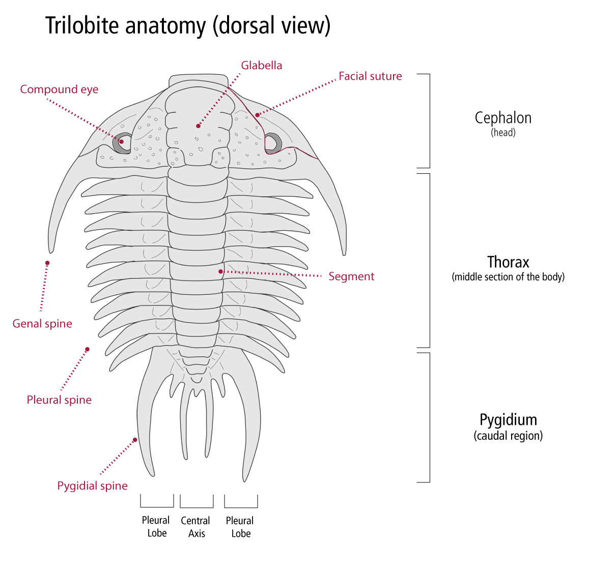 Figure 4: Trilobite (oumnh.ox.ac.uk, n.d.)
Trilobites (Eoredlichia, Redlichia) were early arthropods and are important index fossils (Zhang et al., 2003).
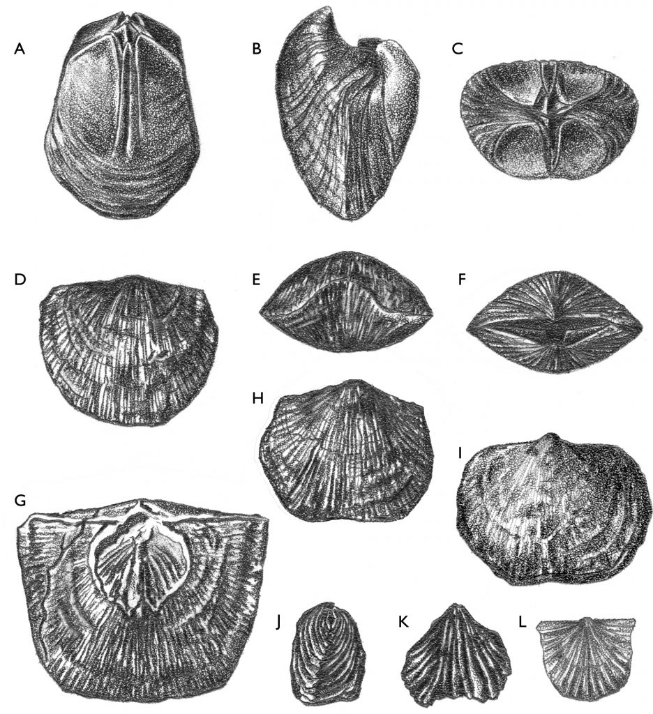 Figure 5: Brachiobod (Brachiopods, 2024)
Brachiopods (Lingulella) were bivalve-like marine animals that lived on the sea floor (Holmer et al., 2005).
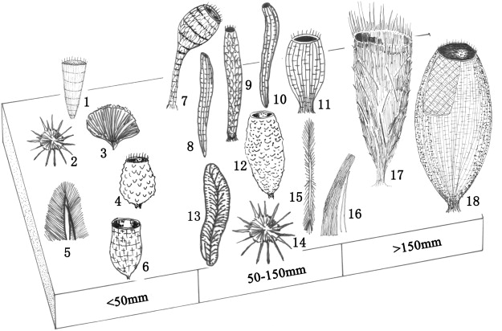 Figure 6: Sponges of the past (Wu, Zhu and Steiner, 2014)
Sponges (Leptomitus teretiusculus) were simple filter-feeding organisms (Botting & Muir, 2018).
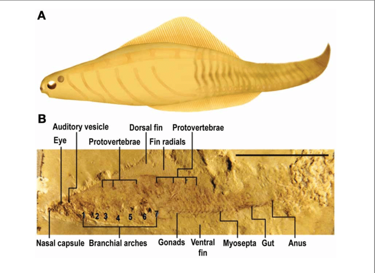 Figure 7: Chordate Diagram (www.geol.umd.edu, n.d.)
Chordates (Myllokunmingia) are some of the earliest known vertebrate ancestors (Shu et al., 1999).
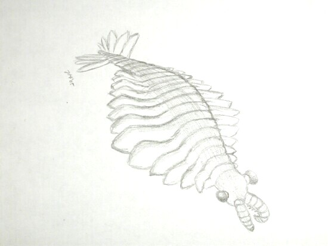 Figure 8: Anomolocaris sketch (Fossilmuseum.net, 2025)
Anomalocarids (Anomalocaris) were top predators of the Cambrian seas (Daley et al., 2009).
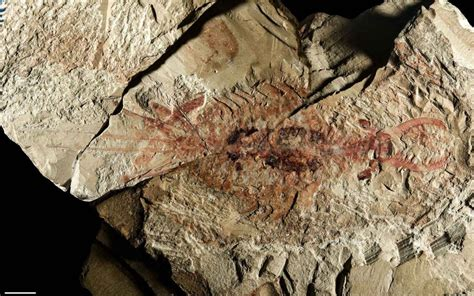 Figure 9: Fossil example mold (IUGS, "Chengjiang Fossil Site," 2025.)
Mould Fossils Form when an organism decays, leaving an empty impression in the rock (Zhu et al., 2005).
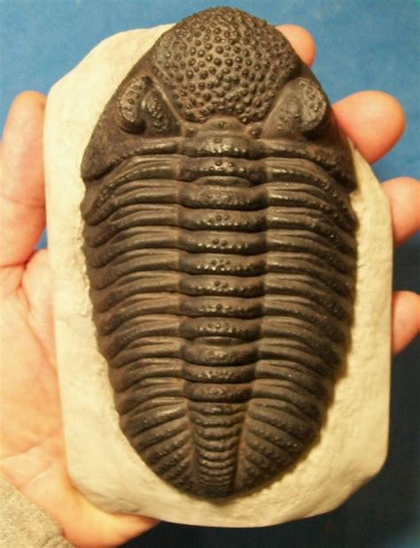 Figure 10: Fossil example cast (PaleoScene, "Museum Quality Fossil Casts," 2025.)
Cast Fossils occur when minerals fill the inside of a mould, creating a 3D fossil replica. (Chen et al., 1997).
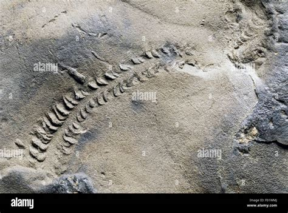 Figure 11: Fossil example trace (Australian Museum, "Cambrian Trace Fossils," 2025.)
Trace Fossils – Preserve evidence of movement, such as burrows or feeding traces (Gehling et al., 2001).
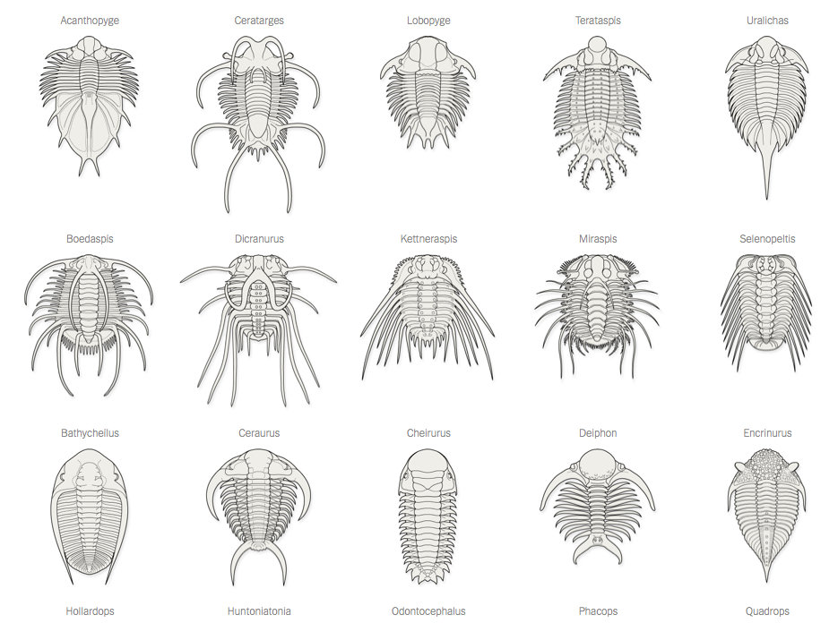Some fossils, like trilobites and brachiopods, are called index fossils because they help scientists date rock layers. Trilobites (Eoredlichia, Redlichia) and Brachiopods (Lingulella) – These fossils are useful for figuring out the age of Cambrian rocks. (Zhang & Hou, 2004).
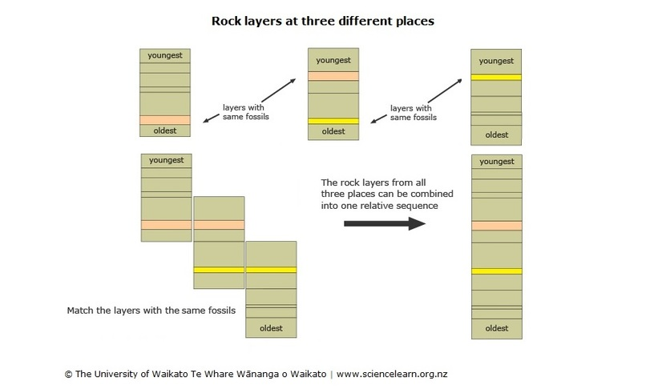Because they lived for a short time but were widespread, index fossils help scientists match up rock layers from different places. (Gradstein et al., 2012).
Relative Dating compares Chengjiang fossils to other Cambrian fossils to estimate their age based on their position in rock layers. (Shu et al., 1999). Absolute Dating scientists use radiometric dating to analyze volcanic ash layers near Chengjiang, which show the site is about 520 million years old. (Zhu et al., 2005).
520 million years ago, the Earth looked completely different. The supercontinent Gondwana covered most of the Southern Hemisphere, while Laurentia, Baltica, and Siberia were separate land masses.
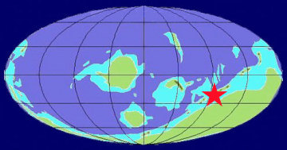Chengjiang was near the coast of what is now China, an area that was underwater at the time. (Scotese, 2009). This impact would have been massive on the global climate
Most continents being cloer to the equator would mean the world was generally warmer and more humid. There were no polar ice caps, leading to higher sea levels and widespread shallow seas. (Shields, 2007).
The Chengjiang site was located in a shallow marine environment near the equator, meaning it had warm tropical waters. This allowed for high biodiversity, as warm, nutrient-rich waters supported a range of soft-bodied organisms.
Warmer waters led to less oxygen mixing, which might explain why some Chengjiang species lived in low-oxygen conditions. The shallow seas also helped with fossil preservation, as fine sediment quickly buried dead organisms. (Zhu et al., 2006).
 A climate mad of the world 520Mya
A climate mad of the world 520Mya
Faunal Succession – Older fossils are found in deeper layers, while younger fossils are in the upper layers. (Gradstein et al., 2012).
Law of Superposition – In undisturbed rock layers, the oldest layers are at the bottom, and the newest ones are on top. (Chen et al., 1997).
Law of Crosscutting – any geological feature (like a fault or intrusion) that cuts across or modifies another feature is younger than the feature it cuts. (www.nps.gov, n.d.)
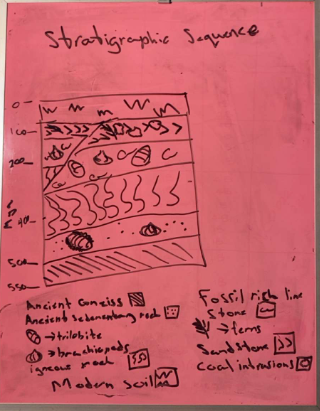 An image of my hand drawn stratigraphic sequence displaying both faunal succession and the law of superposition and crosscutting